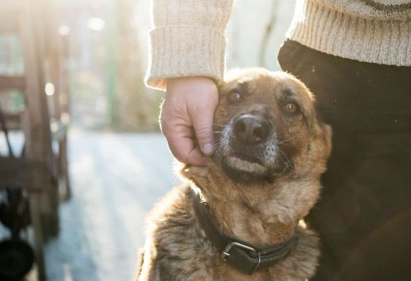

Checklist para adotar um Pet

Parabéns por adotar um animal de estimação! Você está iniciando um relacionamento maravilhoso e gratificante. Como adotar um novo animal de estimação traz muitas mudanças tanto para o pet quanto para o tutor, compilamos uma lista de verificação para ajudar a tornar a transição o mais tranquila possível.
Perguntas para Todos os Adotantes
- Você tem outros animais? Como eles reagirão a um novo pet?
- Sua residência atual é adequada para o pet que está considerando?
- Como sua vida social ou obrigações de trabalho afetarão sua capacidade de cuidar do pet?
- Você tem um plano para cuidar do novo pet durante férias e/ou viagens a trabalho?
- Como as pessoas com quem você mora se sentem sobre ter um animal em casa?
- Você (ou seu cônjuge, parceiro ou colega de quarto) tem intolerância a pelos, sujeira ou outras realidades de conviver com um pet (ex: alergias)?
- Você ou alguém da sua casa tem problemas de saúde que podem ser afetados pela presença de um animal?
- Qual raça ou espécie de animal combina melhor com seu estilo de vida atual?
- Há tensão na casa? Os pets percebem rapidamente o estresse no ambiente, o que pode piorar seus problemas de comportamento ou saúde.
- Há um adulto na família que assumiu responsabilidade final pelo cuidado do animal?
Outras Considerações
- O que você espera que o animal traga para sua vida? Exemplo: um parceiro para correr/caminhar ou companhia mais tranquila?
- Se você está pensando em adotar um animal jovem, tem tempo e paciência para lidar com comportamentos típicos da juventude?
- Você avaliou bem seu estilo de vida e decidiu se um animal mais novo ou mais velho combina melhor com você?
- Você é capaz de treinar e lidar com um pet com problemas de comportamento ou busca um pet tranquilo?
- Precisa de um animal confiável com crianças? Ou que possa viajar com você?
- Prefere um pet que te siga pela casa o tempo todo ou um mais independente?